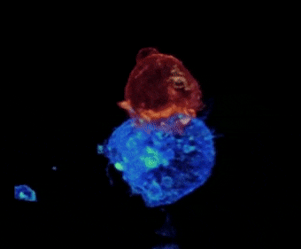

Os leucócitos ou glóbulos brancos são células produzidas pela medula óssea e linfonodos,
com função é produzir anticorpos para proteger o organismo contra os patógenos. Leucócitos é o principal agente do sistema imunológico do nosso corpo.
São leucócitos:
Essas células, presentes no sangue, são um tipo de leucócito (glóbulo branco) e podem ser de três tipos principais:

São importantes na regulação da resposta imune. Estão presentes nos tecidos conjuntivos e no sangue (quando são chamados de monócitos) e, no sistema imune, possui a função de detectar e fagocitar (processo que engloba e digere substâncias no organismo) microrganismos invasores, células mortas e vários tipos de resíduos. Essas células são as primeiras a perceber a presença de agentes invasores.